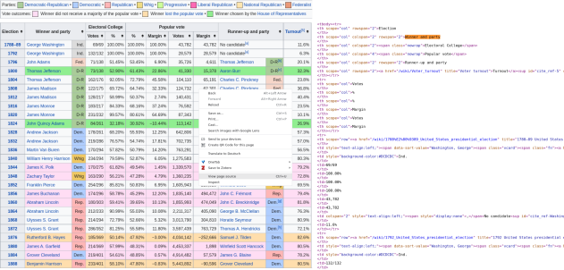
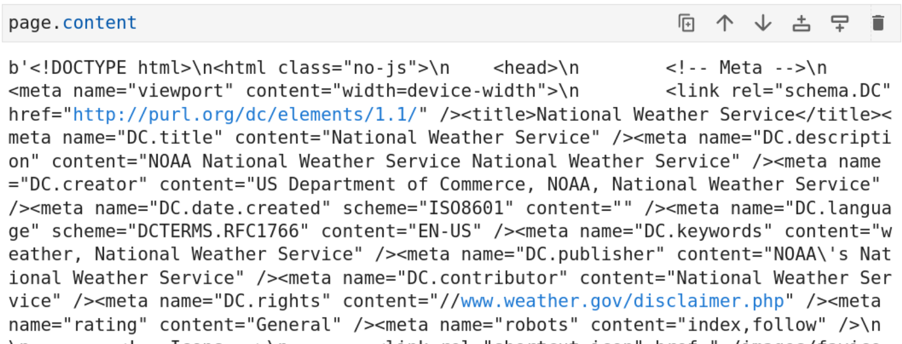
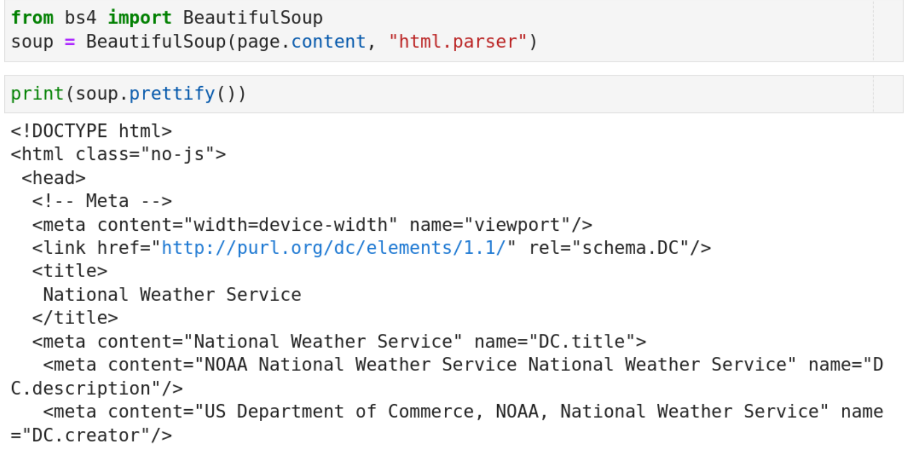

Harnessing APIs and web scraping to collect data
What is an API?
"API" stands for application programming interface.
What is an API?
"API" stands for application programming interface.
What is an API?
"API" stands for application programming interface.
Interacting with APIs
The REST API
REST stands for "representational state transfer".
It defines a number of architectural constraints of the API.
Endpoints
An API endpoint is the end of your communication channel to the API. An API can have different endpoints for channels leading to different resources.
Example: New York Times API
(-) /archive: get NYT article metadata for a given month.
(-) /search: search for NYT articles with filters.
(-) /books: Get the NYT best sellers list and lookup book reviews.
(-) /mostpolular: Get popular articles on NYTimes.com.
Anatomy of a request
Anatomy of a response
Very often API responses are formatted as JSON objects.
{
"data":
[
{
"end":"2022-07-01T00:00:00.000Z",
"start":"2022-06-30T15:04:14.000Z",
"tweet_count":2
},
{
"end":"2022-07-02T00:00:00.000Z",
"start":"2022-07-01T00:00:00.000Z",
"tweet_count":2
}
]
}
Wrappers
Writing requests manually is tedious. Wrappers add a layer of abstraction that makes this job easier for us.
# Example: interacting with the Twitter API through twarc
from twarc import Twarc2
twarc_client = Twarc2(bearer_token = "XXX")
granularity = "day"
query = "from:joebiden"
day_count = []
for count in twarc_client.counts_recent(
query,
granularity = granularity):
day_count.extend(count["data"])
Rate limits & quotas
Rate limiting is a strategy for limiting network traffic. It puts a cap on how often we can send requests to an API before being temporarily blocked.
Quotas limit how much data you can download in a given time frame.
Example: Twitter v2 API academic-level access
(-) Full-archive tweet search: 300 requests / 15 min & 1 request / second
(-) Quota: 10 mio tweets / month
(-) Follower lookup: 15 requests / 15 min
API tour-de-force
See also the API access code snippets
The Google Trends API
What do you get? Search trends for a search query, time range and country, normalized to the maximum search volume in the given time range.
Usefulness for CSS: Was used a lot during the early times of CSS, hard to quality control. Can serve as a first indicator if something interesting is going on.
Accessibility: Very easy to use, no authentification required.
Example publication: What Can Digital Disease Detection Learn from (an External Revision to) Google Flu Trends?
The Twitter v2 API
What do you get? Historic tweets back to 2010 and in real time, highly developed query language, followers, full conversation trees, ...
Usefulness for CSS: Very useful, allthough a bit overused because of the very good accessibility & data quality. A LOT of CSS publications use Twitter data.
Accessibility: Academic access requires an application process. Very good documentation, well-maintained Python wrapper, restrictive rate-limits & monthly quota require some planning for data retrieval.
Example publication: Collective Emotions and Social Resilience in the Digital Traces After a Terrorist Attack
The PushShift API and Reddit data
What do you get? Complete history of submissions, comments, scores.
Usefulness for CSS: Very useful, subreddits are a nice way to retrieve topic-specific text, used in many CSS research projects.
Accessibility: No application process, rather restrictive rate limit of 1 request / second, good data set descriptors.
Example publication: Patterns of Routes of Administration and Drug Tampering for Nonmedical Opioid Consumption: Data Mining and Content Analysis of Reddit Discussions
The Telegram API
What do you get? Messages & media in a given channel, channel members.
Usefulness for CSS: Very useful to get data from fringe-groups that are not represented on big social media platforms. Severly underused in CSS research.
Accessibility: Clunky authentification process, lacking documentation, python wrapper not really designed for data collection.
Example publication: What they do in the shadows: examining the far-right networks on Telegram
The MediaWiki API
What do you get? Gateway to Wipipedia and Wikimedia Commons content. Access wikipedia articles, article discussions & revision histories, ...
Usefulness for CSS: Very useful to research public knowledge creation, knowledge structure, volunteer interactions in a large organisation, ...
Accessibility: No authentification needed, good documentation, large number of endpoints and search options, good python wrapper.
Example publication: Volunteer contributions to Wikipedia increased during COVID-19 mobility restrictions
The New York Times API
What do you get? Article abstracts and metadata, not full article texts.
Usefulness for CSS: Somewhat limited because full texts are missing, but abstracts can serve as a window into histporic high-quality journalistic texts.
Accessibility: Easy authentification, good documentation, nice python wrapper, hard to get article texts.
Example publication: The rise and fall of rationality in language
Steam reviews & comments
What do you get? Reviews & comments to reviews of games on Steam.
Usefulness for CSS: Niche usefulness to investigate gamers, some comment threads are used as chats. Underused data source.
Accessibility: Easy authentification, sparse documentation, OK python wrapper.
Example publication: A Study of Analyzing on Online Game Reviews using a Data Mining Approach: STEAM Community Data
Open Street Maps
What do you get? Map data (nodes, ways, relations), alternative to Google maps.
Usefulness for CSS: Very useful for research that needs location data. HUGE amounts of available data. Data availability can be biased, due to volunteer activity.
Accessibility: No authentification required, very powerful API & query language with a steep learning curve. For big data queries, use command-line tools.
Example publication: Generating Open-Source Datasets for Power Distribution Network Using OpenStreetMaps
CrossRef
What do you get? Article titles, authors, journals, number of references.
Usefulness for CSS: Useful for scientometrics research, alternative to costly closed services such as Web of Science.
Accessibility: No authentification required, slow and a bit unstable data retrieval (?), OK python wrapper, good dataset descriptor.
Example publication: Citation Intent Classification Using Word Embedding
Spotify
What do you get? Metadata about artists, playlists & tracks, song features like "danceability".
Usefulness for CSS: Useful to research characteristics and popularity of songs, song features are "black boxes" - hard to validate.
Accessibility: Easy authentification via Spotify account, somewhat clunky to use because there is no query language and artist / playlist / track URIs are needed to get data, good Python wrapper.
Example publication: Cultural Divergence in popular music: the increasing diversity of music consumption on Spotify across countries
Facebook & Instagram
CrowdTangle (API documentation)
Web scraping
- what to do if there is no API -
What is webscraping?
List of United States presidential Elections page source
Getting information from webpages.
How does it work?
Write code that sends a request to the server hosting the web page of interest. In Python the "requests" package helps to send and receive requests.
import requests
page = "https://forecast.weather.gov/MapClick.php?lat=37.7772&lon=-122.4168"
page = requests.get(page)
How does it work?
The server sends the source code of the webpage: (mostly) HTML. Web browsers render the HTML code to display a nice-looking website. Our code doesn't do that - we need to parse the information to identify elements of interest.
How does it work?
Enter: the Python package BeautifulSoup.
Finding useful information within the page
page = requests.get(page)
soup = BeautifulSoup(page.content, 'html.parser')
seven_day = soup.find(id="seven-day-forecast")
forecast_items = seven_day.find_all(class_="tombstone-container")
tonight = forecast_items[0]
print(tonight.prettify())
Further reading
Excellent tutorial for a workflow from HTML to pandas DataFrame.
Web scraping code snippets.
API access code snippets.
Chris Bail's SICSS talk on APIs (in R).
Crowd-sourced list of useful APIs.
Summary
APIs provide a structured way of accessing data.
Use a wrapper to access APIs from Python.
Pay attention to rate limits and quotas.
Plan your research given the specifics of an API.
Web scraping gives you access to data when no APIs are available.
Use requests to get the HTML of a webpage.
Check the contents of the page and HTML to identify the tags of the relevant information.
Use BeautifulSoup to parse the HTML and access individual fields.
Exercise
APIs provide a structured way of accessing data.
Use a wrapper to access APIs from Python.
Pay attention to rate limits and quotas.
Plan your research given the specifics of an API.
Web scraping gives you access to data when no APIs are available.
Use requests to get the HTML of a webpage.
Check the contents of the page and HTML to identify the tags of the relevant information.
Use BeautifulSoup to parse the HTML and access individual fields.